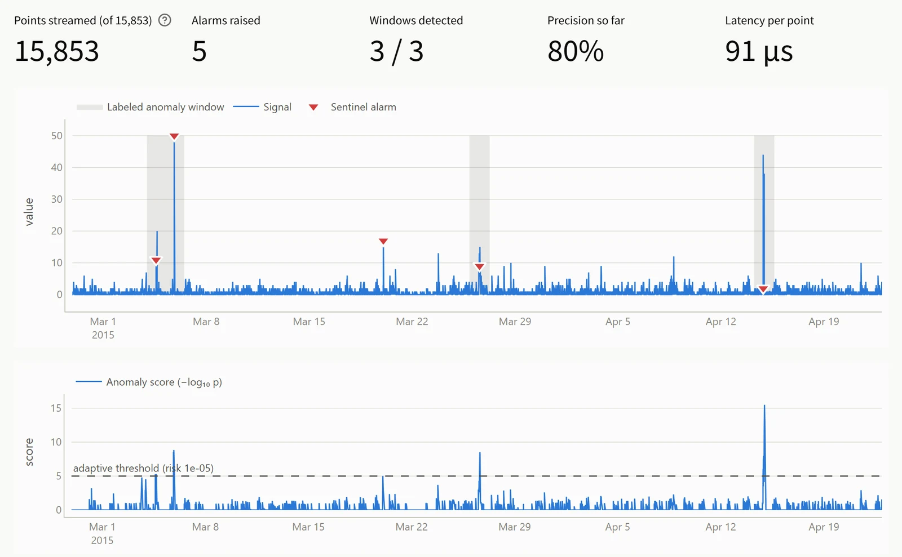

Sentinel
A watchman for live data. It learns what normal looks like for each signal, and speaks up only when something is truly rare, with a reason every time.
Every failure leaves a trace in the data before it becomes an outage.
Miss the warning and it turns into an outage: lost money, unhappy users.
Raise too many alarms and people stop listening, then miss the real one.
- 1
Decide live
Each value arrives once. Decide now, never peek at the future.
- 2
Fit any signal
Server CPU, ad prices, road traffic, tweets. One fixed threshold cannot fit them all.
- 3
Raise few alarms, each with a reason
Every flag needs a score, a NORMAL / ANOMALOUS label and evidence.
The textbook rule raises 2,403 alarms for just 116 real problems.
- Extremes are normal. 47 of 58 signals have heavy tails, so “big” does not mean “wrong”.
- Rhythm matters. 18 signals repeat every day, so low at 3 a.m. can be fine.
- No common scale. Percent, dollars, tweet counts, car speeds.
Almost none, on purpose. Read in time order, no filling, no rescaling. Sentinel learns each signal's scale itself.
Five watchers ask one question: how rare is this?
One value at a time. Never looks ahead.
- Spikethis value vs. its learned normal
- Routinevs. the same time yesterday
- New levellast 10 values vs. last 200
- Jitterhow jumpy or frozen the last 10 are
- New shapelast 8 values vs. the past 2,000
How often has this signal done something this extreme?
Rarer than
1 in 100,000?
Then quiet for 300 values: one alarm per incident.
Don't alarm on a number. Alarm on rarity.
Each watcher keeps a rarity meter for its own signal. One rule everywhere, rarer than 1 in 100,000, so the same detector works on CPU, tweets and taxi rides with no threshold set by hand. (The maths: extreme-value theory.)
Only two moments cross the line. Both are real problems.
fix 1Don't jump to conclusions
After seeing only a few extremes, the meter used to decide “huge values are normal” and missed obvious spikes. Now it needs real evidence first.
Biggest-ever spikes caught: 31 → 37
fix 2Accept a new normal
If a problem is still there after the quiet period, the signal has changed for good. Sentinel re-learns normal instead of alarming again and again.
One idea per run. Keep it only if the score goes up.
Phase 1: v2 fixed how tails are learned, v3 added alarms for slow build-ups, v4 the new-shape watcher, v5 tuned the risk level.
- 1Reproduce our starting point (v5)0.551start
- 2Fix 1, light0.561kept
- 3Fix 1, strong0.544dropped
- 4+ Fix 2, re-learning0.584kept
- 5Shorter learning: 300 → 200 values0.556dropped
- 6Fix 1, medium + re-learning0.594final
- 7Fix 1, strong + re-learning0.571dropped
We judge it per incident: caught, missed, or false alarm.
Of our alarms, how many were real?
Of the real problems, how many did we catch? 65 of 116
One number that balances both.
Median, from the marked anomaly to our first alarm. 66% within 10 steps.
- One setting for all 58 signals. Nothing tuned per signal.
- Hide a whole category, tune on the rest: still 0.594.
- 5 signals with no problems: 0 alarms.
- No “point adjustment”. It lets random alarms score 0.92.
The best of all 8 methods, with 6 to 15× fewer false alarms.
Same data, same scoring: every model family named in the problem statement. Each of the 7 other methods was given its best possible threshold, picked using the answers. Sentinel uses one fixed setting and still wins.
Every alarm comes with a reason a person can read.

Our app streams a signal point by point. Here: 3 of 3 real problems caught, 1 false alarm.
Value 50.00 is 99.4 scales above the learned baseline 0.32 (normal band −1.18 to 1.82).
Sustained level shift: recent mean 6.40 vs baseline 0.43 (8.2 scales above).
The last 8 points form a pattern not seen before: the closest past match (1,750 steps ago) differs by 11.40 per point.
timestamp · value · score · NORMAL / ANOMALOUS · watcher · reasonWhat it can't do yet, and what comes next.
Most of our 39 false alarms are big bursts like these that nobody labelled.
- “Seen before” spikes: when an equally big spike came earlier, rarity can't tell them apart. 11 of 32 caught.
- Short hourly signals: little history to learn from. Online ads: 5 of 14.
- Warm-up: the first 300 values are for learning only.
- Learn from feedback: “not a problem” stops that pattern alarming.
- Weekly and holiday rhythm for demand signals.
- Watch related signals together: CPU, disk and network of one machine.
Sentinel catches 65 of 116 real problems, live, at 16,000 values a second, and explains every alarm.